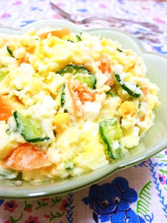

材料
じゃがいも
卵
きゅうり
人参
玉ねぎ
マヨネーズ
お酢
塩・こしょう

1.
ゆで卵を作る、じゃがいもは皮をむいて縦半分2cm厚さに切り、ひたひたのお水に塩を入れて茹でる
2.
じゃがいもが煮えたら湯切りし、中火で1分ほど加熱。水分を飛ばしながら潰し、お酢を加える
3.
野菜はか薄くカット、少量の塩で揉みしばらく置き、水で洗ってよく絞る。卵は粗みじん切りに
4.
3全部とマヨネーズを加えてよく混ぜる、こしょうで味を調えて完成
じゃがいも
卵
きゅうり
人参
玉ねぎ
マヨネーズ
お酢
塩・こしょう
ゆで卵を作る、じゃがいもは皮をむいて縦半分2cm厚さに切り、ひたひたのお水に塩を入れて茹でる
じゃがいもが煮えたら湯切りし、中火で1分ほど加熱。水分を飛ばしながら潰し、お酢を加える
野菜はか薄くカット、少量の塩で揉みしばらく置き、水で洗ってよく絞る。卵は粗みじん切りに
3全部とマヨネーズを加えてよく混ぜる、こしょうで味を調えて完成